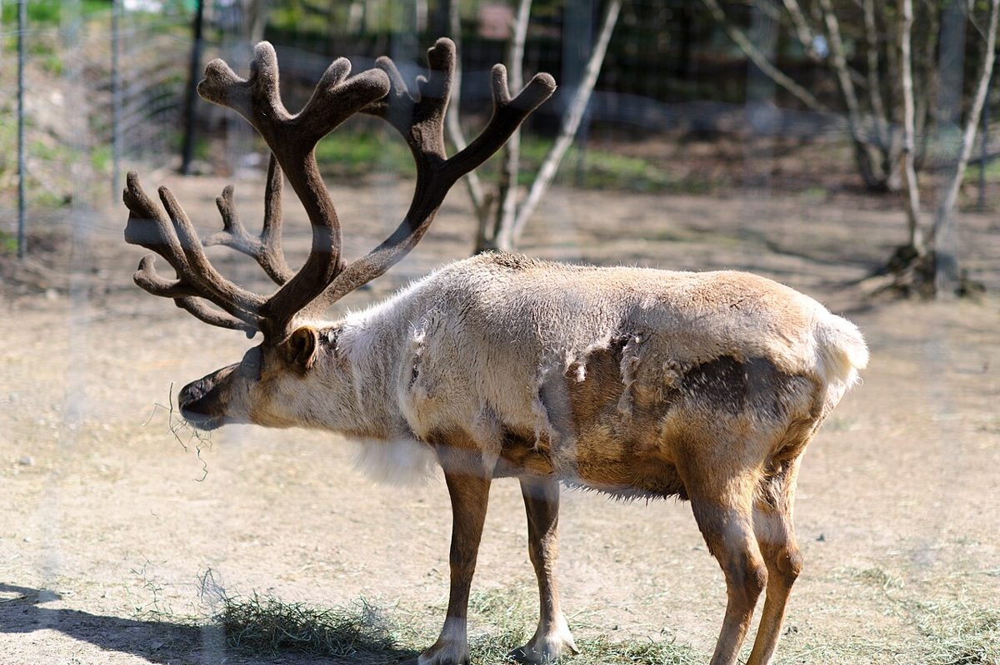
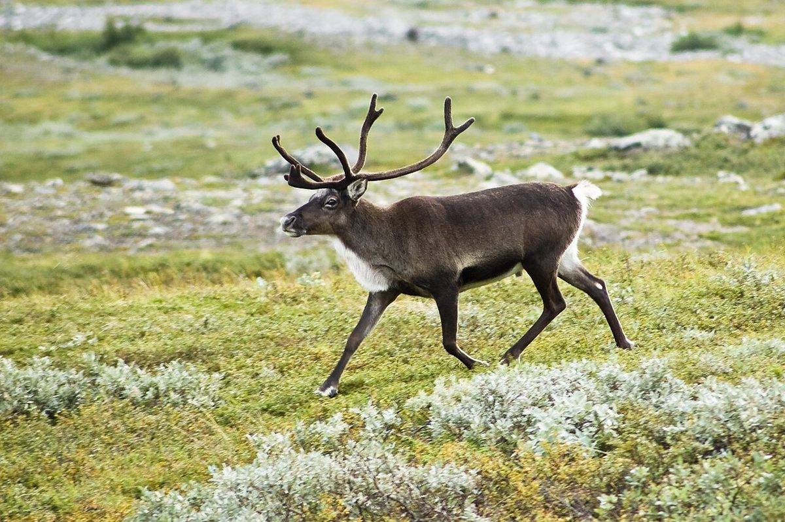
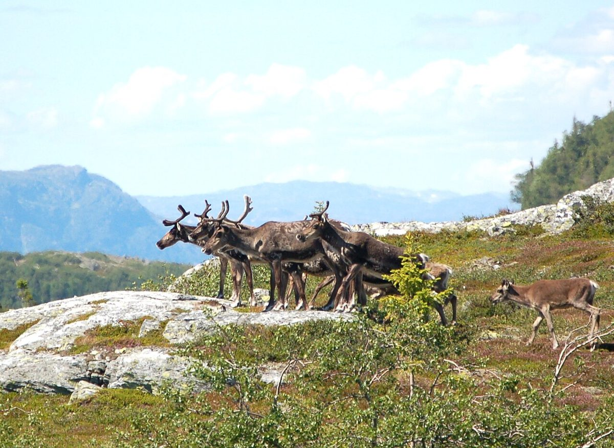
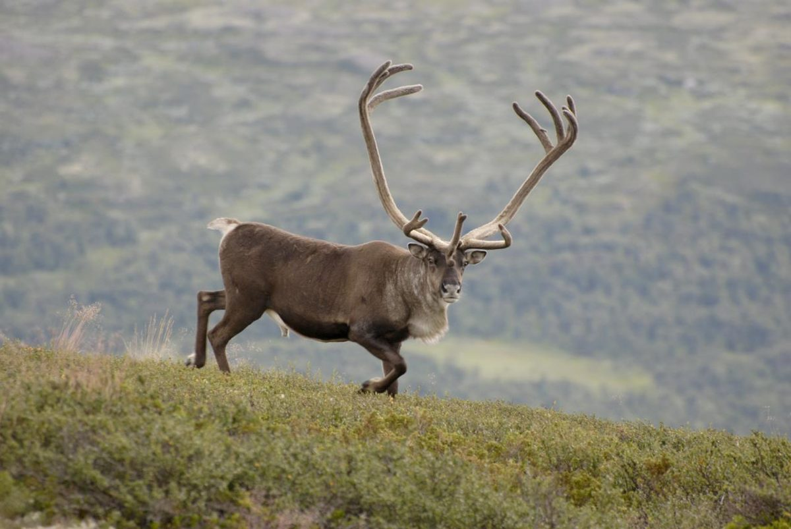
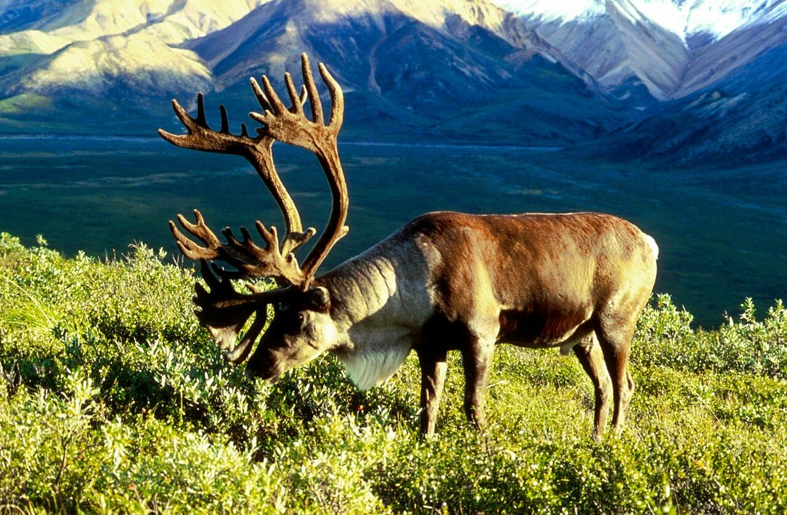
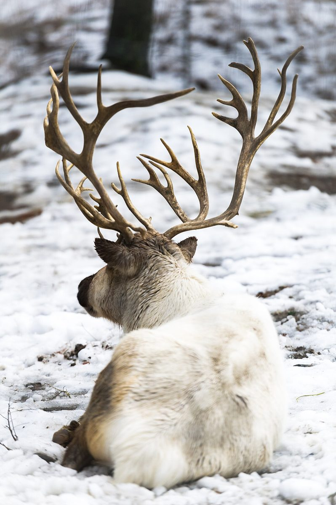
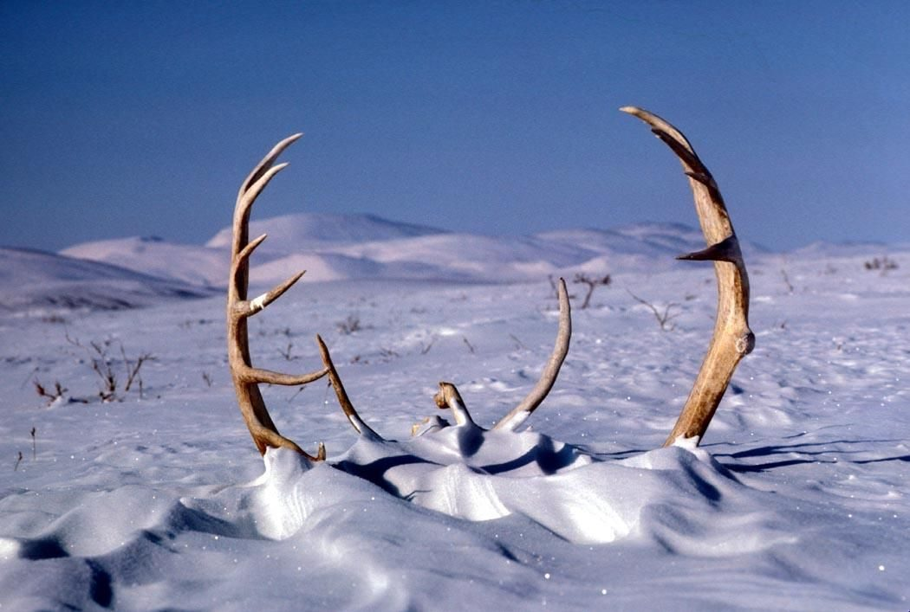
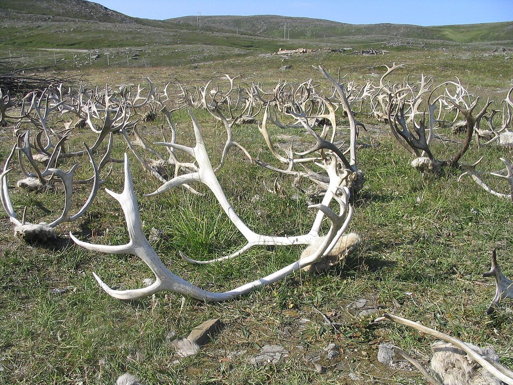
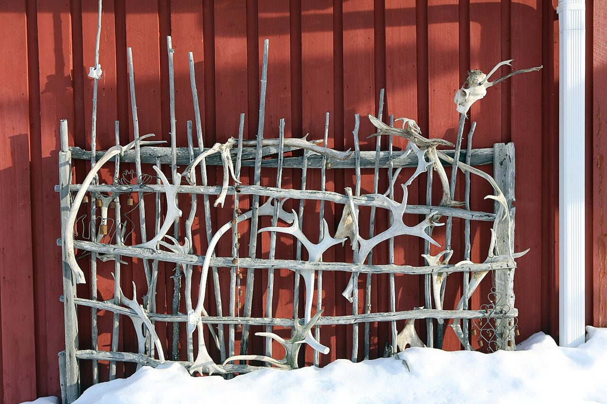
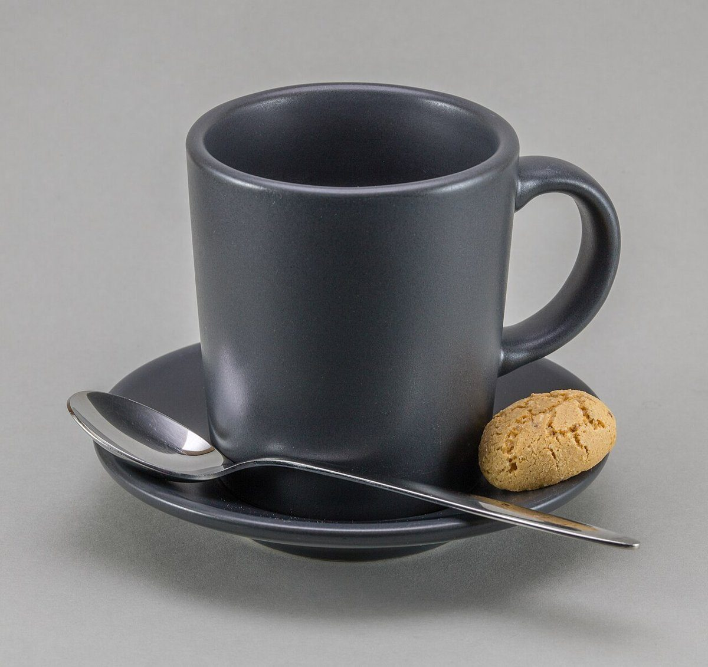

1Velvet
袋角(ふくろづの)のころ
やわらかな皮膚につつまれて、角がぐんぐん伸びていく時期。一年のはじまりの、まだ丸みのある姿です。




岐阜県大垣市 / 喫茶店(カフェ)
営業時間・メニューなど詳しいことは準備中です
制作側の連想
店名の由来は分かりません。制作側は「トナカイ」という言葉から、角が生えかわる一年を連想し、このページを「袋角 → 枝角 → 落角」の三幕に仕立てました。制作側の連想で、お店の理念・由来とは無関係です。お店がこの三幕と関係しているかどうかも分かりません。
やわらかな皮膚につつまれて、角がぐんぐん伸びていく時期。一年のはじまりの、まだ丸みのある姿です。



皮膚がむけて、硬く枝分かれした角があらわれる時期。いちばん堂々とした姿です。


役目を終えた角が、雪や草の上に残されます。そしてまた、次の袋角へ。



ひと休みのイメージ
写真は雰囲気のイメージです。お店で提供されるものではありません。メニューは準備中です。



ご案内
| 所在地 | 〒503-2213 岐阜県大垣市赤坂町165-4 |
|---|---|
| 電話 | なし |
| 営業時間 | 準備中 |
| 定休日 | 準備中 |
| ご予約 | 準備中 |
| 駐車場 | 準備中 |
| SNS | Instagram @kissa_tonakai |